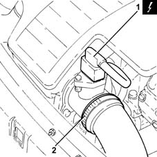
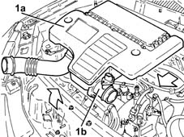
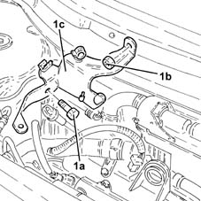
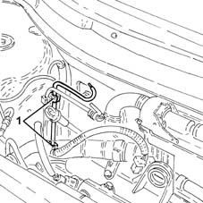
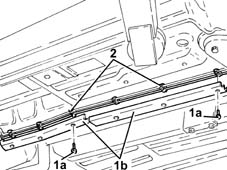
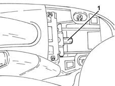
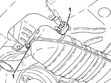
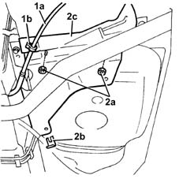
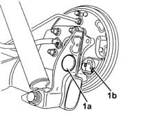
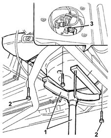

1040B36 rear fuel delivery line - r r
- Path
- Procedures > 10 ENGINE > 1040 FUEL TANK AND PIPES > 1040B fuel supply/return circuit pipe > 1040B36 rear fuel delivery line - r r
- Kind
- repair procedure (removal / refitting; the operation number is the code)
- Applies to
- engines: 1.3 JTD; all production periods
- Interactive page
- https://sloeber94.github.io/elrnDB-lYpsln/en/#/2429019
Applies to: engines: 1.3 JTD; all production periods
 Removing
Removing
 Refitting
RefittingPosition the vehicle on the ramp.
Ensure that the ignition key is in OFF position, then disconnect the battery negative terminal (-).
 | Name | Connector |
|---|---|---|
- | Battery |
Proceed with removal 1044B10 fuel filter assembly - r + r or replace .
1. Disconnect the electrical connection from the air flow meter.
| Name | Connector |
|---|---|---|
1 | Air flow meter |
2. Loosen the band and disconnect the the turbocharger air inlet sleeve from the rigid pipe, air flow meter side.

Applies to: engines: 1.3 JTD; all production periods
1. Remove the air filter (1a) complete with air flow meter (1b) by releasing from the underlying pins and then from the rear fastenings.

Applies to: engines: 1.3 JTD; all production periods
1. Undo the bolt (1a), nut (1b) and remove the fuel filter mounting (1c).

Applies to: engines: 1.3 JTD; all production periods
1. Release the rear fuel supply pipe from the attachments in the engine compartment.

Applies to: engines: 1.3 JTD; all production periods
1. Undo the bolts (1a) and remove the fuel pipe protection (1b).
2. Release the rear fuel supply pipe from the underbody fastenings.

Applies to: engines: 1.3 JTD; all production periods
Proceed with removal 7040L22 REAR TRIM on TUNNEL -R.R. .
1. Loosen the handbrake cable adjustment nut.

Applies to: engines: 1.3 JTD; all production periods
1. Release the rear exhaust silencer from the flexible mountings.

Applies to: engines: 1.3 JTD; all production periods
1. Release the handbrake cable (1a) from the band (1b).
2. Undo the nuts (2a), remove the clip (2b) and remove the central heat shield (2c).

Applies to: engines: 1.3 JTD; all production periods
1. Remove protective cover (1a) and disconnect handbrake cable from unit on the shoes (1b)

Applies to: engines: 1.3 JTD; all production periods
1. Position a hydraulic jack fitted with a suitable tool under the fuel tank.
2. Undo the fuel tank bracket retaining bolts.
3. Lower the fuel tank as necessary to disconnect the quick-release connector of the rear fuel supply pipe, fuel pump side.
Release the rear fuel supply pipe from the attachment on the fuel tank and remove it.

Applies to: engines: 1.3 JTD; all production periods
Refitting
RemovingRefit in its seating the rear fuel supply pipe and secure it with the band on the fuel tank.
Connect the quick-release connector of the rear fuel supply pipe, fuel pump side.
Place the fuel tank back in its housing using the hydraulic jack.
Tighten the bolts securing the fuel tank brackets.
Remove the hydraulic jack fitted with a suitable tool used to support the fuel tank.
Connect the handbrake cable to the attachment on the shoes and refit the protective cover in its seating.
Refit the rear heat shield in its seating, then secure it with the clip and nuts.
Secure the handbrake cable with the band.
Fasten the rear exhaust silencer using the flexible mountings.
Secure the rear fuel supply pipe with the underbody fixings.
Place the fuel pipe protection back in their housings and secure them using the bolts.
Secure the rear fuel supply pipe with the attachments in the engine compartment.
Refit the fuel filter mounting in its seating, then secure it with the bolt and nut.
Replace the air filter, complete with air flow meter, in its housing.
Connect the air intake sleeve to the turbocharger, air flow meter side, and tighten the band.
Connect the electrical connection to the air flow meter.
Proceed with refitting 1044B10 fuel filter assembly - r + r or replace .
Proceed with refitting 3380A04 handbrake - check travel .
Proceed with refitting 7040L22 REAR TRIM on TUNNEL -R.R. .
Connect the negative (-) battery terminal.
Remove the car from the ramps.